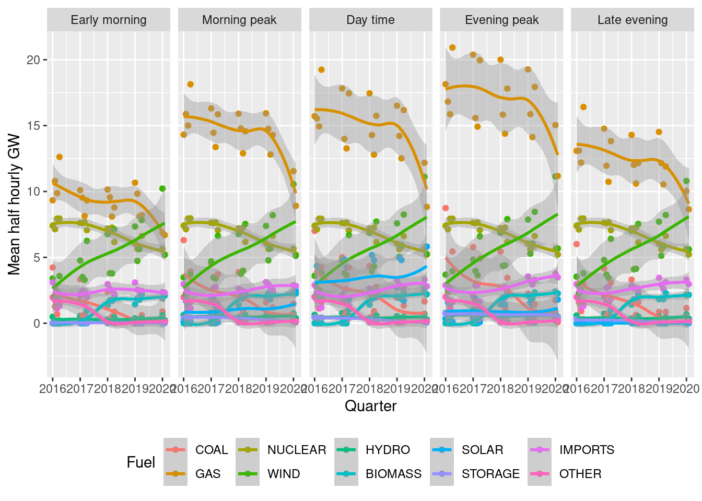
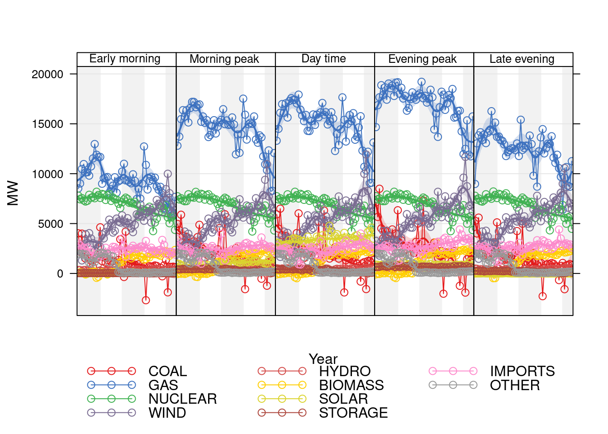
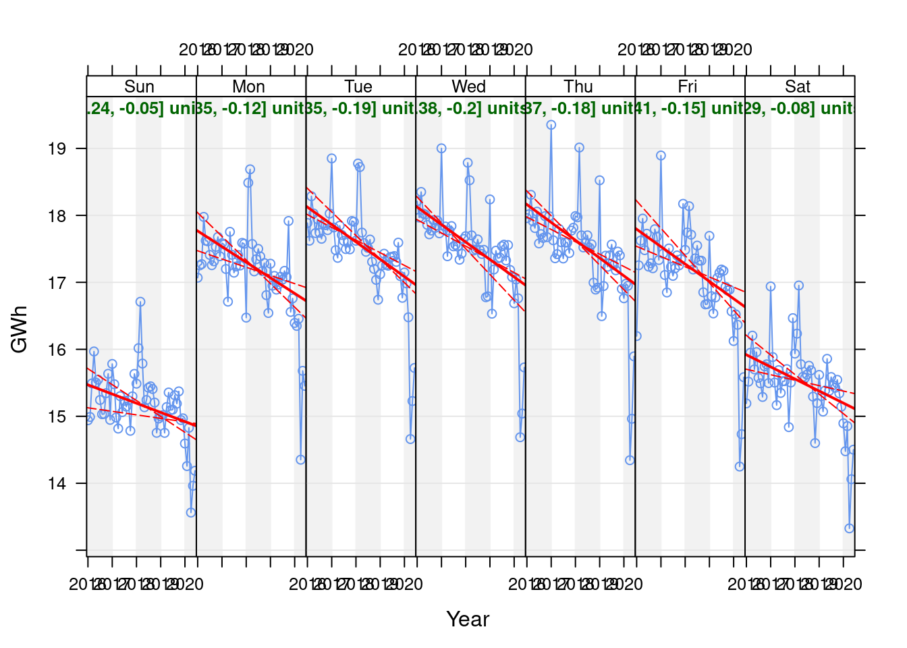
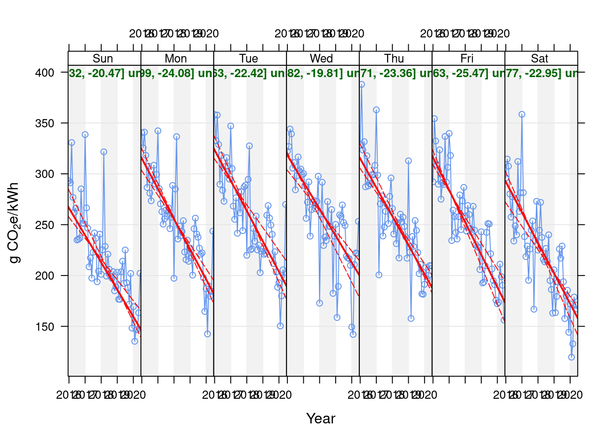
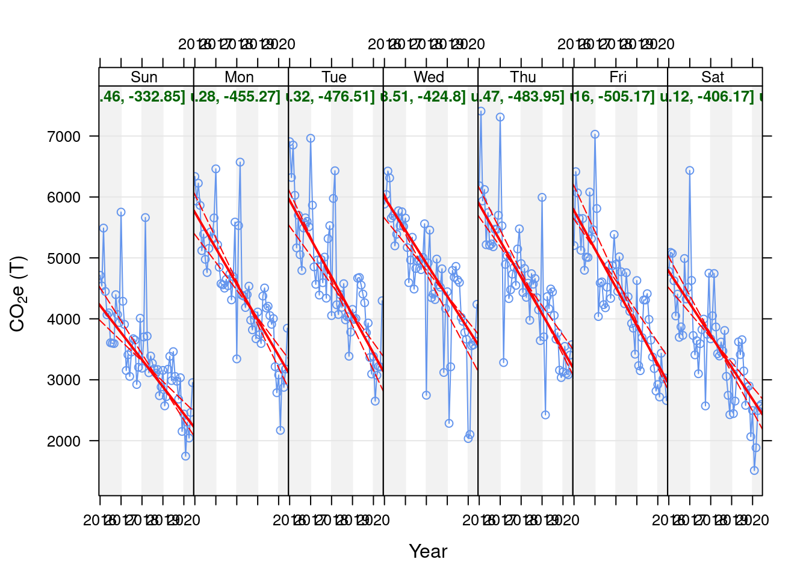

Building on (Staffell 2017) and (Khan, Jack, and Stephenson 2018), we are interested in GHG emissions from UK electricity generation over time. We are especially interested in how this might change during the UK covid-19 lockdown period (from ).
Several articles by ythe UK ESO and others have already explored this topic:
Fortunately the UK Electricity System Operator publishes half-hourly generation data which includes both power generation (and thus 'demand') by fuels and also includes a per-kWh carbon intensity for the electricity produced per half-hour. We use this data to explore the following research questions:
To what extent has electricty demand shown deviation from 'normal' demand patterns during the lockdown period?
Has the composition of fuel sources supplying electriicty changed during this period?
Has the lockdown changed greenhouse-gas emissions associated with electriicty generation?
This is 'grid' generation from major power stations of various kinds. Data downloaded from https://data.nationalgrideso.com/carbon-intensity1/historic-generation-mix/r/historic_gb_generation_mix and pre-processed.
| DATETIME | year | rDateTimeUTC | GENERATION | CARBON_INTENSITY |
|---|---|---|---|---|
| 2016-01-01 00:00:00 | 2016 | 2016-01-01 00:00:00 | 28789 | 249 |
| 2016-01-01 00:30:00 | 2016 | 2016-01-01 00:30:00 | 29372 | 262 |
| 2016-01-01 01:00:00 | 2016 | 2016-01-01 01:00:00 | 29468 | 275 |
| 2016-01-01 01:30:00 | 2016 | 2016-01-01 01:30:00 | 28783 | 277 |
| 2016-01-01 02:00:00 | 2016 | 2016-01-01 02:00:00 | 27736 | 278 |
| 2016-01-01 02:30:00 | 2016 | 2016-01-01 02:30:00 | 27045 | 277 |
Note that according to the dataset source:
mean MW over the half hour or it may mean MWh per half-hour. It is unclear. The % refers to the fuel mix. Which one could easily calculate from the MW values. But anyway...Table 2.2 shows the mean half hourly generation (MW) and mean carbon intensity over the years covered by the data. It also shows the implied mean half-hourly total kg CO2e per half hour which we have calculated as follows: {#kgcalc} * convert GENERATION (MW) to MWh per half hour by GENERATION/2 (1 MW for half an hour = 1/2 MWh) * convert the result to kWh (* 10000) * multiply by the CARBON_INTENSITY which is in gCO2e/kWh * divide by 1000 to get Kg
Yes, we have *1000 and then /1000 which is 1 but for the sake of clarity we have kept all the steps.
NB: we are unclear how generation via interconnect is included in the original carbon intensity calculation but note that the ESO forecast methodology document states that it is.
| year | Total annual CO2e (MtCO2e, DBEIS) | Total annual CO2e (MtCO2e, calculated) | Mean halfhourly CO2e (tCO2e, calculated) | Mean half-hourly carbon intensity (gCO2e/kWh) | Mean halfhourly generation (GWh) | Total annual generation (TWh) | Max date in range | nObs |
|---|---|---|---|---|---|---|---|---|
| 2016 | 83.0 | 92.39 | 5259.25 | 299.11 | 34.12 | 299.69 | 2016-12-31 | 17568 |
| 2017 | 73.1 | 81.19 | 4634.19 | 262.77 | 33.95 | 297.37 | 2017-12-31 | 17520 |
| 2018 | 66.8 | 72.13 | 4117.03 | 234.98 | 33.88 | 296.78 | 2018-12-31 | 17520 |
| 2019 | NA | 64.17 | 3662.62 | 214.09 | 33.27 | 291.45 | 2019-12-31 | 17520 |
| 2020 | NA | 24.64 | 3019.20 | 185.73 | 31.69 | 129.28 | 2020-06-18 | 8160 |
As we can see mean half-hourly generation has declined over the years but much less spectacularly than the mean carbon intensity which decreased by 57 from 2017 to 2020.
Table of peak periods
| year | Early morning | Morning peak | Day time | Evening peak | Late evening | Total |
|---|---|---|---|---|---|---|
| 2016 | 5.85 | 1.62 | 8.80 | 4.83 | 3.88 | 24.97 |
| 2017 | 5.78 | 1.61 | 8.74 | 4.80 | 3.85 | 24.78 |
| 2018 | 5.78 | 1.61 | 8.75 | 4.77 | 3.82 | 24.73 |
| 2019 | 5.69 | 1.58 | 8.59 | 4.66 | 3.77 | 24.29 |
| 2020 | 5.08 | 1.36 | 7.56 | 4.16 | 3.39 | 21.55 |
Fuel trend plots by peak period
## `geom_smooth()` using formula 'y ~ x'
## Saving 10 x 5 in image
## `geom_smooth()` using formula 'y ~ x'Repeat using openair::smoothTrend() for de-seasoning and other benefits. NB: deaseasoning produces -ve values for coal :-)

## png
## 2Figure @(fig:tilePlotGW): Tile plot of halfhourly GW over time. We like tile plots.
## Saving 9 x 5 in imageFigure 2.1: halfhourly GW over time
Figure @(fig:profilePlotGW): line plot of halfhourly GW by season.
## Saving 9 x 5 in imageFigure 2.2: mean halfhourly GW
## Saving 9 x 5 in imageFigure 2.3: mean halfhourly GW
Figure @(fig:tilePlotCI): Tile plot of halfhourly CI over time. We like tile plots
## Saving 9 x 5 in imageFigure 2.4: halfhourly CI over time
Figure @(fig:tilePlotCO2e): Tile plot of halfhourly total CO2e (kT) over time. We like tile plots
## Saving 9 x 5 in imageFigure 2.5: halfhourly total CO2e (kT) over time
Figure @(fig:GWhBySeason2019): halfhourly mean GWh by season. We like tile plots
## Saving 9 x 5 in imageFigure 2.6: halfhourly mean GWh by season
Essentially 'non-grid' generation from solar photovoltaic and small scale wind which is 'embedded' - i.e. non-grid connected as it is connected 'downstream' of the grid exit points. We are not entirely sure if this is accounted for in the grid dataset or not.
We have not yet found a source of this data (if we even need it).
For now embedded generation data is probably not included in the following analysis but we would expect it to depress grid demand when there is greatest insolation (middle of the day, obvs) and wind (largely random in the UK?).
In this section we analyse changes in electricity demand and associated carbon emissions during the UK Covid-19 lockdown via analysis of the generation data.
Several articles and analyses have suggested that demand (and thus generation) patterns have shifted so that weekdays have become more like weekends.
Figure 3.1 uses the openair TheilSen() function (Carslaw and Ropkins 2012) to create a de-seasoned trend plot for mean monthly half-hourly (i.e. the mean of all half-hourly GW values for each month) generation in GW split by peak period (07:00 - 08:30 and 16:00 - 20:00) .
These plots show that there has been a steady decline of ~ 0.4 - 0.5 GW mean half hourly generation (and thus demand) per year since 2016 in each time period. The substantial below-trend fall in generation during lockdown in early Spring 2020 is clear, especailly for the morning peak, day-time and, to a lesser extent, evening peak periods. There appears to have been a smaller below-trend reduction at other times as we would expect. We can also see a notable drop in generation in late 2015 which was unusually warm and wet.
use mean of half-hourly GWh otherwise the periods with more half-hours tend to visually dominate
## [1] "Taking bootstrap samples. Please wait."
## [1] "Taking bootstrap samples. Please wait."
## [1] "Taking bootstrap samples. Please wait."
## [1] "Taking bootstrap samples. Please wait."
## [1] "Taking bootstrap samples. Please wait."Figure 3.1: Theil-Sen plot of mean half-hourly generation per month since 2016-01-01
## png
## 2| year | Early morning | Morning peak | Day time | Evening peak | Late evening |
|---|---|---|---|---|---|
| 2016 | 13.69 | 17.71 | 19.24 | 19.78 | 15.89 |
| 2017 | 13.58 | 17.60 | 19.17 | 19.72 | 15.82 |
| 2018 | 13.58 | 17.62 | 19.18 | 19.58 | 15.71 |
| 2019 | 13.35 | 17.31 | 18.82 | 19.15 | 15.51 |
| 2020 | 12.80 | 15.97 | 17.78 | 18.37 | 14.96 |
Use the openair results object to estimate what the 2020 values would have been if the deaseasoned trend slope had continued.
need to use the Theil-Sen slope model to estimate what the values would have been
## Saving 7 x 5 in image| date | diff_Early morning | diff_Morning peak | diff_Day time | diff_Evening peak | diff_Late evening | diffTotal |
|---|---|---|---|---|---|---|
| Jan 2020 | -0.10 | -0.77 | -0.13 | -0.55 | -0.35 | -1.91 |
| Feb 2020 | -0.18 | -0.44 | -0.19 | -0.65 | -0.30 | -1.76 |
| Mar 2020 | -0.19 | -0.57 | -0.26 | -0.31 | -0.27 | -1.59 |
| Apr 2020 | -1.95 | -3.57 | -2.88 | -2.08 | -1.58 | -12.07 |
| May 2020 | -1.27 | -2.61 | -2.20 | -1.68 | -1.11 | -8.88 |
| Jun 2020 | -0.65 | -1.30 | -1.34 | -0.96 | -0.66 | -4.92 |
| date | pcDiff_Early morning | pcDiff_Morning peak | pcDiff_Day time | pcDiff_Evening peak | pcDiff_Late evening |
|---|---|---|---|---|---|
| Jan 2020 | -0.80 | -4.51 | -0.67 | -2.89 | -2.31 |
| Feb 2020 | -1.35 | -2.55 | -1.02 | -3.43 | -1.99 |
| Mar 2020 | -1.47 | -3.32 | -1.39 | -1.63 | -1.74 |
| Apr 2020 | -14.89 | -20.92 | -15.52 | -10.99 | -10.38 |
| May 2020 | -9.70 | -15.31 | -11.86 | -8.90 | -7.33 |
| Jun 2020 | -4.99 | -7.62 | -7.25 | -5.11 | -4.35 |
Theil-Sen by weekday (for fun):
## [1] "Taking bootstrap samples. Please wait."
## [1] "Taking bootstrap samples. Please wait."
## [1] "Taking bootstrap samples. Please wait."
## [1] "Taking bootstrap samples. Please wait."
## [1] "Taking bootstrap samples. Please wait."
## [1] "Taking bootstrap samples. Please wait."
## [1] "Taking bootstrap samples. Please wait."
Figure 3.2 shows total half-hourly generation since 2020-02-01. Overall generation has fallen as we would expect given the season (less heating and lighting required) and weekdays are indeed less easy to distinguish from weekends.
## `geom_smooth()` using formula 'y ~ x'Figure 3.2: Half-hourly generation, UK (recent)
Figure 3.3 shows the daily generation profiles over time for each day of the week. Clearly the shapes are both reducing in magnitude (seasonal and lockdown effects) and also converging in shape.
Figure 3.3: Half-hourly generation, UK (recent)
Figure 3.4 shows the mean half-hourly GWh per day. Need to bear in mind the trends identified above.
## Saving 9 x 5 in imageFigure 3.4: Half-hourly GWh
Figure 3.5 shows the mean half-hourly CO2e per half-hour of each day. This plot shows the values as a proportion of the sum of the means across all half hours of each day to illustrate the relative, rather than absolute, shift in generation.
## Saving 9 x 5 in imageFigure 3.5: % half-hourly GWh
Figure 3.6 shows the difference between hourly and weekday patterns for lockdown 2020 and the same period in all years from 2018 onwards. It is interesting to note that the twin peak demand periods have been maintained during lockdown but they are considerably lower although we should expect some 'natural' reduction due to the overall downward generation trend shown in Figure 3.1. The lower middle monthly plot suggests that while lockdown caused a considerable drop in generation, this difference is now starting to converge on 'normal' seasonal demand levels.
## Warning: removing 192 missing rows due to plotPeriodDetailedFigure 3.6: timeVariation plots for half-hourly GW generation comparing pre/lockdown 2020 with the same months in previous years starting in 2018
Repeat but less detail.
Figure 3.7: timeVariation plots for half-hourly GWh generation comparing pre/lockdown 2020 up to 2020-06-23
## Confirming dates plotted: date (as set for openair)## Min. 1st Qu. Median Mean 3rd Qu. Max.
## "2017-01-05 00:00:00" "2017-06-25 23:52:30" "2018-06-23 23:45:00" "2018-09-25 19:46:23" "2019-06-21 23:37:30" "2020-06-18 23:30:00"## Confirming dates plotted: dateFixed## Min. 1st Qu. Median Mean 3rd Qu. Max.
## "2020-01-02" "2020-02-13" "2020-03-27" "2020-03-27" "2020-05-09" "2020-06-22"## Confirming months plotted: date##
## Jan Feb Mar Apr May Jun Jul Aug Sep Oct Nov Dec
## 5472 5424 5952 5760 5952 4464 0 0 0 0 0 0## png
## 2## png
## 2## png
## 2Figure 3.8 is a similar plot but in this case the generation is normalised within each period to enable clarification of changes in the temporal shape of demand rather than changes in the overall level. As we can see the normalised plots indicate that the relative temporal distribution of generation (demand) is very similar between each period. The shape of demand is therefore relatively unchanged, but it's level is distinctly lower (Figure 3.7).
Figure 3.8: timeVariation plots for normalised half-hourly GW generation comparing pre/lockdown 2020 with the same months in previous years starting in 2018
For this analysis we have shifted the dates for the comparison years to ensure that weekdays and weekends align in each year of data but this does not mean that Easter is the same weekend across the comparison periods nor that Bank Holidays (e.g. VE day 2020) are consistent.
Figure 3.9 shows the most recent mean daily half-hourly GW compared to the same day in previous years. As hinted by Figure 3.7, lockdown clearly reduced demand below the seasonal trend as Figure 3.1 suggested and also levels of demand are now starting to converge on the seasonal trend (c.f. Figure 3.7).
Beware temperature differences - need to control for heating degree days as 2020 was a very warm spring
## Warning: Ignoring unknown parameters: yMin, yMax## Saving 9 x 5 in image## `geom_smooth()` using formula 'y ~ x'
## `geom_smooth()` using formula 'y ~ x'Figure 3.9: Comparative daily mean half-hour generation levels 2020 vs pre-2020
Figure 3.10 shows the percentage difference between the mean half-hourly generation per day in 2020 and the pre 2020 average for the same day. As we can see January 2020 was already slightly lower than previous years but February appears similar. There appears to be a substantial lockdown effect albiet with some fluctuations and very large dips on VE Day (Friday 8th May) and Thursday 28th May.
## Warning: Ignoring unknown parameters: yMin, yMax## Saving 9 x 5 in imageFigure 3.10: Percentage difference in mean generation levels 2020 vs pre 2020
Figure 3.11 shows the trend in the ratio between maximum and minimum half-hourly generation by day. This shows that 2020 was already less 'peaky' than previous years with a lower ratio between maximum and minimum generation on most days. This appear to have amplified in the first week or so of UK lockdown with a further reduction in the ratio but this has not been sustained over time with greater variance as we move into May 2020.
## `geom_smooth()` using formula 'y ~ x'Figure 3.11: Ratio of maximum to minimum generation per day
tbc
There are two aspects to this. The first is carbon intensity which is driven by the mix of fuels being used to generate electricity at any given time. The second is the total greenhouse gasses emitted which is, obviously, the intensity * the volume. Given the slight uncertainty over units (see Section 2) we assume this is GENERATION * CARBON_INTENSITY.
Clearly the first of these is driven by the mix of fuels and in the UK this reflects a complex dynamic system of availability of renewables, price, interconnect and demand. To some extent we would expect that lower overall demand should (but not always) increase the share of renewables. However other factors are also at play:
Figure 3.12 agin uses the openair TheilSen() function (Carslaw and Ropkins 2012) to create a de-seasoned trend plot but this time for mean half-hourly carbon intensity by peak demand period. Again Table 3.3 indicates the years over which the trend is calculated. This plot shows that carbon intensity has fallen by around 40 kg CO2e/MWh per year over the time period in all time periods. However it is also noticeable that mean carbon intensity has marginally increased above trend in the months of lockdown.
## [1] "Taking bootstrap samples. Please wait."
## [1] "Taking bootstrap samples. Please wait."
## [1] "Taking bootstrap samples. Please wait."
## [1] "Taking bootstrap samples. Please wait."
## [1] "Taking bootstrap samples. Please wait."Figure 3.12: Theil-Sen plot of mean half-hourly carbon intensity per month since 2016-01-01
| year | Early morning | Morning peak | Day time | Evening peak | Late evening |
|---|---|---|---|---|---|
| 2016 | 278.36 | 312.40 | 298.02 | 329.20 | 302.41 |
| 2017 | 243.26 | 274.14 | 261.92 | 290.35 | 266.69 |
| 2018 | 210.10 | 247.87 | 237.46 | 269.08 | 234.98 |
| 2019 | 190.84 | 227.23 | 217.58 | 241.80 | 215.58 |
| 2020 | 168.52 | 193.40 | 181.59 | 213.96 | 192.48 |
## png
## 2Use the openair results object to estimate what the 2020 values would have been if the deaseasoned trend slope had continued.
## Saving 7 x 5 in image| date | diff_Early morning | diff_Morning peak | diff_Day time | diff_Evening peak | diff_Late evening | diffTotal |
|---|---|---|---|---|---|---|
| Jan 2020 | 4.10 | 3.21 | -3.02 | -14.87 | -0.47 | -11.05 |
| Feb 2020 | -27.51 | -39.55 | -51.99 | -39.92 | -31.87 | -190.84 |
| Mar 2020 | 3.53 | 11.79 | 8.22 | -3.51 | 0.08 | 20.11 |
| Apr 2020 | 18.98 | 5.22 | -1.38 | 9.95 | 17.19 | 49.96 |
| May 2020 | 16.76 | 4.81 | 1.35 | 13.11 | 18.37 | 54.39 |
| Jun 2020 | 37.88 | 24.79 | 35.04 | 43.59 | 41.70 | 182.99 |
| date | pcDiff_Early morning | pcDiff_Morning peak | pcDiff_Day time | pcDiff_Evening peak | pcDiff_Late evening |
|---|---|---|---|---|---|
| Jan 2020 | 2.50 | 1.62 | -1.58 | -6.76 | -0.25 |
| Feb 2020 | -17.04 | -20.16 | -27.46 | -18.35 | -16.93 |
| Mar 2020 | 2.22 | 6.08 | 4.39 | -1.63 | 0.04 |
| Apr 2020 | 12.11 | 2.73 | -0.75 | 4.67 | 9.37 |
| May 2020 | 10.86 | 2.55 | 0.74 | 6.23 | 10.14 |
| Jun 2020 | 24.95 | 13.30 | 19.44 | 20.96 | 23.34 |
Theil-Sen by weekday (for fun):
## [1] "Taking bootstrap samples. Please wait."
## [1] "Taking bootstrap samples. Please wait."
## [1] "Taking bootstrap samples. Please wait."
## [1] "Taking bootstrap samples. Please wait."
## [1] "Taking bootstrap samples. Please wait."
## [1] "Taking bootstrap samples. Please wait."
## [1] "Taking bootstrap samples. Please wait."
Figure 3.13 shows half-hourly carbon intensity since 2020-02-01. Overall generation has fallen as we would expect given the season (less heating and lighting required) and weekdays are indeed less easy to distinguish from weekends.
## `geom_smooth()` using formula 'y ~ x'Figure 3.13: Half-hourly CO2e emissions, UK (recent)
Figure 3.14 shows the daily carbon intensity profiles over time for each day of the week.
Figure 3.14: Half-hourly generation, UK (recent)
Figure 3.15 shows the mean half-hourly CO2e per day. Need to bear in mind the trends identified above.
## Saving 9 x 5 in imageFigure 3.15: half-hourly CI
Figure 3.16 shows the mean half-hourly CO2e per half-hour of each day. This plot shows the values as a proportion of the sum of the means across all half hours of each day to illustrate the relative, rather than absolute, shift in generation.
## Saving 9 x 5 in imageFigure 3.16: % half-hourly CI
Figure 3.17 shows the difference between hourly and weekday patterns for lockdown 2020 and the previous year(s) starting from January 2018. This plot is not particularly informative since we now CI is already lower in 2020 than previous years and we would expect it to fall during the spring as solar generation increases its contributon. The lockdown phases will also be affected by small numbers of highly windy days.
Figure 3.17: timeVariation plots for half-hourly carbon intensity comparing lockdown 2020 up to 2020-06-23
## Confirming dates plotted: date (as set for openair)## Min. 1st Qu. Median Mean 3rd Qu. Max.
## "2017-01-05 00:00:00" "2017-06-25 23:52:30" "2018-06-23 23:45:00" "2018-09-25 19:46:23" "2019-06-21 23:37:30" "2020-06-18 23:30:00"## Confirming dates plotted: dateFixed## Min. 1st Qu. Median Mean 3rd Qu. Max.
## "2020-01-02" "2020-02-13" "2020-03-27" "2020-03-27" "2020-05-09" "2020-06-22"## Confirming months plotted: date##
## Jan Feb Mar Apr May Jun Jul Aug Sep Oct Nov Dec
## 5472 5424 5952 5760 5952 4464 0 0 0 0 0 0## png
## 2## png
## 2## png
## 2Figure 3.18 shows the mean half-hourly carbon intensity per day in 2020 and the pre 2020 average for the same day. As we would expect given Figure 3.12, 2020 was already considerably lower than the average of previous years but this is not necessarily sustained through lockdown although the affects of weather on solar and wind availability need to be taken in to account.
## Warning: Ignoring unknown parameters: yMin, yMax## Saving 9 x 5 in image## `geom_smooth()` using formula 'y ~ x'
## `geom_smooth()` using formula 'y ~ x'Figure 3.18: Percentage difference in mean carbon intensity levels 2020 vs pre 2020
Figure 3.19 shows the percentage difference between the mean half-hourly carbon intensity per day in 2020 and the pre 2020 average for the same day. As expected, 2020 was already considerably lower than the average of previous years but this is not necessarily sustained through lockdown although the affects of weather on solar and wind availability need to be taken in to account.
## Warning: Ignoring unknown parameters: yMin, yMax## Saving 9 x 5 in imageFigure 3.19: Percentage difference in mean carbon intensity levels 2020 vs pre 2020
tbc
In this section we use our calculation of total CO2e emitted per half hour (see Section 2.1) to analyse the changes in total CO2e emitted which is, after all, what we are mostly interested in from a climate change point of view. Remember that this value is driven both by total generation (demand) and carbon intensity. As we saw above, these are not always tightly correlated.
Figure 3.20 again uses the openair TheilSen() function (Carslaw and Ropkins 2012) to create a de-seasoned trend plot but this time for mean half-hourly carbon intensity by peak demnand period. Again Table 3.5 indicates the years over which the trend is calculated.
This plot shows that total CO2e emissions intensity has fallen by a half-hourly mean of ~600-800 tonnes of CO2e over the time period. However there is some variation around this trend with apparently slightly above trend emissions in the evening peak period during April and May 2020 noticeable despite the almost complete absence of coal generation during this period (see Annex, Figure ??).
## [1] "Taking bootstrap samples. Please wait."
## [1] "Taking bootstrap samples. Please wait."
## [1] "Taking bootstrap samples. Please wait."
## [1] "Taking bootstrap samples. Please wait."
## [1] "Taking bootstrap samples. Please wait."Figure 3.20: Theil-Sen plot of mean half-hourly kg CO2e emissions per month since 2016-01-01
## png
## 2| year | Early morning | Morning peak | Day time | Evening peak | Late evening |
|---|---|---|---|---|---|
| 2016 | 3894.87 | 5666.75 | 5864.67 | 6675.04 | 4943.11 |
| 2017 | 3396.89 | 4975.10 | 5184.76 | 5901.14 | 4372.38 |
| 2018 | 2911.83 | 4473.25 | 4664.49 | 5387.04 | 3796.03 |
| 2019 | 2579.85 | 4020.44 | 4181.45 | 4702.25 | 3410.86 |
| 2020 | 2165.19 | 3180.52 | 3315.67 | 3992.39 | 2924.12 |
Now use the openair results object to estimate what the 2020 values would have been if the deaseasoned trend slope had continued.
## Saving 7 x 5 in image| date | diff_Early morning | diff_Morning peak | diff_Day time | diff_Evening peak | diff_Late evening | diffTotal |
|---|---|---|---|---|---|---|
| Jan 2020 | 41.73 | -124.90 | -274.08 | -650.80 | -168.21 | -1176.25 |
| Feb 2020 | -531.72 | -810.28 | -1477.64 | -1047.19 | -753.59 | -4620.42 |
| Mar 2020 | 59.63 | -80.51 | 143.78 | -255.17 | -154.39 | -286.66 |
| Apr 2020 | 27.13 | -421.38 | -339.92 | 42.41 | 110.29 | -581.47 |
| May 2020 | 152.97 | -230.03 | -141.18 | 237.17 | 235.54 | 254.48 |
| Jun 2020 | 494.74 | 302.36 | 490.63 | 807.63 | 617.60 | 2712.96 |
| date | pcDiff_Early morning | pcDiff_Morning peak | pcDiff_Day time | pcDiff_Evening peak | pcDiff_Late evening |
|---|---|---|---|---|---|
| Jan 2020 | 1.97 | -3.60 | -7.52 | -15.57 | -5.71 |
| Feb 2020 | -25.60 | -23.72 | -41.13 | -25.41 | -25.98 |
| Mar 2020 | 2.92 | -2.39 | 4.06 | -6.28 | -5.40 |
| Apr 2020 | 1.36 | -12.72 | -9.73 | 1.06 | 3.92 |
| May 2020 | 7.79 | -7.05 | -4.10 | 6.01 | 8.51 |
| Jun 2020 | 25.73 | 9.42 | 14.45 | 20.77 | 22.70 |
Theil-Sen by weekday (for fun):
## [1] "Taking bootstrap samples. Please wait."
## [1] "Taking bootstrap samples. Please wait."
## [1] "Taking bootstrap samples. Please wait."
## [1] "Taking bootstrap samples. Please wait."
## [1] "Taking bootstrap samples. Please wait."
## [1] "Taking bootstrap samples. Please wait."
## [1] "Taking bootstrap samples. Please wait."
Figure 3.21 shows total half-hourly CO2e emissions since 2020-02-01. Overall generation has fallen as we would expect given the season (less heating and lighting required) and weekdays are indeed less easy to distinguish from weekends.
## `geom_smooth()` using formula 'y ~ x'Figure 3.21: Half-hourly total CO2e emissions, UK (recent)
Figure 3.22 shows the daily CO2e emissions profiles over time for each day of the week since 2020-02-01.
Figure 3.22: Half-hourly CO2e emissions, UK (recent)
Figure 3.23 shows the mean half-hourly CO2e per day. Need to bear in mind the trends identified above.
## Saving 9 x 5 in imageFigure 3.23: half-hourly CO2e
Figure 3.24 shows the mean half-hourly CO2e per half-hour of each day. This plot shows the values as a proportion of the sum of the means across all half hours of each day to illustrate the relative, rather than absolute, shift in generation.
## Saving 9 x 5 in imageFigure 3.24: % half-hourly CO2e
Figure 3.25 shows the difference between hourly and weekday patterns for lockdown 2020 and the previous year(s) starting from January 2018. Again, due to the downward trends we have already identified, we would expect total CO2e emissions to be lower during 2020 and also to fall during the spring as solar generation increases its contributon.
Figure 3.25: timeVariation plots for half-hourly CO2e comparing lockdown 2020 with pre-lockdown starting in 2018
## Confirming dates plotted: date (as set for openair)## Min. 1st Qu. Median Mean 3rd Qu. Max.
## "2017-01-05 00:00:00" "2017-06-25 23:52:30" "2018-06-23 23:45:00" "2018-09-25 19:46:23" "2019-06-21 23:37:30" "2020-06-18 23:30:00"## Confirming dates plotted: dateFixed## Min. 1st Qu. Median Mean 3rd Qu. Max.
## "2020-01-02" "2020-02-13" "2020-03-27" "2020-03-27" "2020-05-09" "2020-06-22"## Confirming months plotted: date##
## Jan Feb Mar Apr May Jun Jul Aug Sep Oct Nov Dec
## 5472 5424 5952 5760 5952 4464 0 0 0 0 0 0## png
## 2## png
## 2## png
## 2Figure 3.26 shows the mean half-hourly carbon intensity per day in 2020 and the pre 2020 average for the same day. As expected, 2020 was already considerably lower than the average of previous years but this is not necessarily sustained through lockdown although the affects of weather on solar and wind availability need to be taken in to account.
check y axis
## Warning: Ignoring unknown parameters: yMin, yMax## Saving 9 x 5 in image## `geom_smooth()` using formula 'y ~ x'
## `geom_smooth()` using formula 'y ~ x'Figure 3.26: Mean half-hourly total CO2e by day, 2020 vs pre 2020
Figure 3.27 shows the percentage difference between the mean half-hourly carbon intensity per day in 2020 and the pre 2020 average for the same day. As expected, 2020 was already considerably lower than the average of previous years but this is not necessarily sustained through lockdown although the affects of weather on solar and wind availability need to be taken in to account.
## Warning: Ignoring unknown parameters: yMin, yMax## Saving 9 x 5 in imageFigure 3.27: Percentage difference in mean half-hourly CO2e 2020 vs pre 2020
tbc
If you wish to use any of the material from this report please cite as:
This work is (c) 2020 the authors. Usage rights are specified in the License section (5.4).
All code used to create this report is available from:
This work is made available under the Creative Commons Attribution-ShareAlike 4.0 International (CC BY-SA 4.0) License.
This means you are free to:
Under the following terms:
Notices:
For the avoidance of doubt and explanation of terms please refer to the full license notice and legal code.
You may not be reading the most recent version of this report. Please check:
We do not 'support' the code but if you notice a problem please check the issues on our repo and if it doesn't already exist, please open a new one. * this report's edit history
This work was supported by:
Descriptive stats using skimr::skim():
| Name | gridGenDT |
| Number of rows | 78288 |
| Number of columns | 50 |
| _______________________ | |
| Column type frequency: | |
| character | 1 |
| Date | 2 |
| difftime | 1 |
| factor | 3 |
| numeric | 41 |
| POSIXct | 2 |
| ________________________ | |
| Group variables | None |
Variable type: character
| skim_variable | n_missing | complete_rate | min | max | empty | n_unique | whitespace |
|---|---|---|---|---|---|---|---|
| rDateTime | 0 | 1 | 20 | 20 | 0 | 78288 | 0 |
Variable type: Date
| skim_variable | n_missing | complete_rate | min | max | median | n_unique |
|---|---|---|---|---|---|---|
| obsDate | 0 | 1 | 2016-01-01 | 2020-06-18 | 2018-03-26 | 1631 |
| date | 0 | 1 | 2016-01-01 | 2020-06-18 | 2018-03-26 | 1631 |
Variable type: difftime
| skim_variable | n_missing | complete_rate | min | max | median | n_unique |
|---|---|---|---|---|---|---|
| hms | 0 | 1 | 0 secs | 84600 secs | 42300 secs | 48 |
Variable type: factor
| skim_variable | n_missing | complete_rate | ordered | n_unique | top_counts |
|---|---|---|---|---|---|
| peakPeriod | 0 | 1 | FALSE | 5 | Day: 24465, Ear: 22834, Eve: 13048, Lat: 13048 |
| season | 0 | 1 | FALSE | 4 | Spr: 22080, Win: 20208, Sum: 18528, Aut: 17472 |
| dow | 0 | 1 | TRUE | 7 | Sun: 11184, Mon: 11184, Tue: 11184, Wed: 11184 |
Variable type: numeric
| skim_variable | n_missing | complete_rate | mean | sd | p0 | p25 | p50 | p75 | p100 | hist |
|---|---|---|---|---|---|---|---|---|---|---|
| GAS | 0 | 1 | 1.317777e+04 | 5.265370e+03 | 2291.00 | 9.11475e+03 | 1.292500e+04 | 1.715200e+04 | 2.747200e+04 | ▃▇▇▅▁ |
| COAL | 0 | 1 | 1.866260e+03 | 2.380300e+03 | 0.00 | 2.31000e+02 | 8.830000e+02 | 2.594000e+03 | 1.472400e+04 | ▇▂▁▁▁ |
| NUCLEAR | 0 | 1 | 6.845520e+03 | 1.022700e+03 | 3705.00 | 6.21300e+03 | 6.943000e+03 | 7.646000e+03 | 8.859000e+03 | ▁▂▆▇▃ |
| WIND | 0 | 1 | 5.313530e+03 | 3.702440e+03 | 0.00 | 2.29800e+03 | 4.554000e+03 | 7.632000e+03 | 1.712900e+04 | ▇▆▃▂▁ |
| HYDRO | 0 | 1 | 4.152200e+02 | 2.541200e+02 | 0.00 | 2.08000e+02 | 3.810000e+02 | 5.860000e+02 | 1.403000e+03 | ▇▇▅▁▁ |
| IMPORTS | 0 | 1 | 2.529940e+03 | 9.569900e+02 | 0.00 | 1.95900e+03 | 2.720000e+03 | 3.124000e+03 | 4.884000e+03 | ▂▅▇▇▂ |
| BIOMASS | 0 | 1 | 1.134800e+03 | 1.060460e+03 | 0.00 | 0.00000e+00 | 1.295000e+03 | 2.078000e+03 | 3.204000e+03 | ▇▂▃▅▂ |
| OTHER | 0 | 1 | 7.295900e+02 | 8.226500e+02 | 0.00 | 8.90000e+01 | 1.420000e+02 | 1.462000e+03 | 2.173000e+03 | ▇▁▁▂▃ |
| SOLAR | 0 | 1 | 1.306980e+03 | 2.018680e+03 | 0.00 | 0.00000e+00 | 1.300000e+01 | 2.130000e+03 | 9.680000e+03 | ▇▂▁▁▁ |
| STORAGE | 0 | 1 | 2.632100e+02 | 3.273800e+02 | 0.00 | 0.00000e+00 | 1.700000e+02 | 3.900000e+02 | 2.394000e+03 | ▇▁▁▁▁ |
| GENERATION | 0 | 1 | 3.358283e+04 | 7.038010e+03 | 18287.00 | 2.81860e+04 | 3.331400e+04 | 3.849250e+04 | 5.342700e+04 | ▃▇▇▅▁ |
| CARBON_INTENSITY | 0 | 1 | 2.457800e+02 | 7.526000e+01 | 54.00 | 1.95000e+02 | 2.410000e+02 | 2.910000e+02 | 5.110000e+02 | ▂▇▇▂▁ |
| LOW_CARBON | 0 | 1 | 1.501605e+04 | 4.152520e+03 | 6755.00 | 1.18200e+04 | 1.449700e+04 | 1.779925e+04 | 3.074600e+04 | ▅▇▅▂▁ |
| ZERO_CARBON | 0 | 1 | 1.388126e+04 | 3.849980e+03 | 4852.00 | 1.08580e+04 | 1.350200e+04 | 1.652800e+04 | 2.847300e+04 | ▂▇▆▂▁ |
| RENEWABLE | 0 | 1 | 7.035740e+03 | 4.049150e+03 | 125.00 | 3.82300e+03 | 6.496000e+03 | 9.709250e+03 | 2.311800e+04 | ▇▇▅▁▁ |
| FOSSIL | 0 | 1 | 1.504403e+04 | 6.709900e+03 | 2421.00 | 9.94300e+03 | 1.429050e+04 | 1.924000e+04 | 3.684200e+04 | ▅▇▆▂▁ |
| GAS_perc | 0 | 1 | 3.840000e+01 | 1.094000e+01 | 6.60 | 3.09000e+01 | 3.990000e+01 | 4.680000e+01 | 7.010000e+01 | ▁▅▇▆▁ |
| COAL_perc | 0 | 1 | 4.920000e+00 | 5.630000e+00 | 0.00 | 8.00000e-01 | 2.800000e+00 | 7.200000e+00 | 3.020000e+01 | ▇▂▁▁▁ |
| NUCLEAR_perc | 0 | 1 | 2.128000e+01 | 5.530000e+00 | 9.70 | 1.72000e+01 | 2.050000e+01 | 2.460000e+01 | 4.310000e+01 | ▃▇▅▁▁ |
| WIND_perc | 0 | 1 | 1.620000e+01 | 1.142000e+01 | 0.00 | 7.00000e+00 | 1.375000e+01 | 2.300000e+01 | 5.830000e+01 | ▇▆▃▂▁ |
| HYDRO_perc | 0 | 1 | 1.210000e+00 | 6.700000e-01 | 0.00 | 7.00000e-01 | 1.100000e+00 | 1.700000e+00 | 4.200000e+00 | ▇▇▅▁▁ |
| IMPORTS_perc | 0 | 1 | 7.890000e+00 | 3.320000e+00 | 0.00 | 5.70000e+00 | 8.100000e+00 | 1.030000e+01 | 1.890000e+01 | ▂▆▇▃▁ |
| BIOMASS_perc | 0 | 1 | 3.500000e+00 | 3.370000e+00 | 0.00 | 0.00000e+00 | 3.800000e+00 | 6.200000e+00 | 1.610000e+01 | ▇▅▃▁▁ |
| OTHER_perc | 0 | 1 | 2.230000e+00 | 2.550000e+00 | 0.00 | 3.00000e-01 | 5.000000e-01 | 4.600000e+00 | 1.050000e+01 | ▇▂▂▁▁ |
| SOLAR_perc | 0 | 1 | 3.680000e+00 | 5.810000e+00 | 0.00 | 0.00000e+00 | 0.000000e+00 | 5.700000e+00 | 3.280000e+01 | ▇▂▁▁▁ |
| STORAGE_perc | 0 | 1 | 7.000000e-01 | 8.500000e-01 | 0.00 | 0.00000e+00 | 5.000000e-01 | 1.100000e+00 | 7.900000e+00 | ▇▁▁▁▁ |
| GENERATION_perc | 0 | 1 | 1.000000e+02 | 0.000000e+00 | 100.00 | 1.00000e+02 | 1.000000e+02 | 1.000000e+02 | 1.000000e+02 | ▁▁▇▁▁ |
| LOW_CARBON_perc | 0 | 1 | 4.586000e+01 | 1.309000e+01 | 16.40 | 3.61000e+01 | 4.420000e+01 | 5.420000e+01 | 8.790000e+01 | ▂▇▆▂▁ |
| ZERO_CARBON_perc | 0 | 1 | 4.236000e+01 | 1.212000e+01 | 15.50 | 3.33000e+01 | 4.080000e+01 | 5.000000e+01 | 8.510000e+01 | ▂▇▅▂▁ |
| RENEWABLE_perc | 0 | 1 | 2.108000e+01 | 1.194000e+01 | 0.50 | 1.17000e+01 | 1.930000e+01 | 2.860000e+01 | 6.620000e+01 | ▆▇▅▂▁ |
| FOSSIL_perc | 0 | 1 | 4.331000e+01 | 1.293000e+01 | 9.00 | 3.43000e+01 | 4.420000e+01 | 5.270000e+01 | 7.670000e+01 | ▂▅▇▆▁ |
| year | 0 | 1 | 2.017760e+03 | 1.310000e+00 | 2016.00 | 2.01700e+03 | 2.018000e+03 | 2.019000e+03 | 2.020000e+03 | ▇▇▇▇▃ |
| nHalfHours | 0 | 1 | 4.800000e+01 | 0.000000e+00 | 48.00 | 4.80000e+01 | 4.800000e+01 | 4.800000e+01 | 4.800000e+01 | ▁▁▇▁▁ |
| GENERATION_MW | 0 | 1 | 3.358283e+04 | 7.038010e+03 | 18287.00 | 2.81860e+04 | 3.331400e+04 | 3.849250e+04 | 5.342700e+04 | ▃▇▇▅▁ |
| GW | 0 | 1 | 3.358000e+01 | 7.040000e+00 | 18.29 | 2.81900e+01 | 3.331000e+01 | 3.849000e+01 | 5.343000e+01 | ▃▇▇▅▁ |
| GENERATION_MWh | 0 | 1 | 1.679142e+04 | 3.519000e+03 | 9143.50 | 1.40930e+04 | 1.665700e+04 | 1.924625e+04 | 2.671350e+04 | ▃▇▇▅▁ |
| GWh | 0 | 1 | 1.679000e+01 | 3.520000e+00 | 9.14 | 1.40900e+01 | 1.666000e+01 | 1.925000e+01 | 2.671000e+01 | ▃▇▇▅▁ |
| C02e_g | 0 | 1 | 4.272960e+09 | 1.990252e+09 | 776697500.00 | 2.81762e+09 | 3.915386e+09 | 5.280662e+09 | 1.274796e+10 | ▆▇▃▁▁ |
| C02e_kg | 0 | 1 | 4.272960e+06 | 1.990252e+06 | 776697.50 | 2.81762e+06 | 3.915386e+06 | 5.280662e+06 | 1.274796e+07 | ▆▇▃▁▁ |
| C02e_T | 0 | 1 | 4.272960e+03 | 1.990250e+03 | 776.70 | 2.81762e+03 | 3.915390e+03 | 5.280660e+03 | 1.274796e+04 | ▆▇▃▁▁ |
| month | 0 | 1 | 6.190000e+00 | 3.450000e+00 | 1.00 | 3.00000e+00 | 6.000000e+00 | 9.000000e+00 | 1.200000e+01 | ▇▆▅▅▆ |
Variable type: POSIXct
| skim_variable | n_missing | complete_rate | min | max | median | n_unique |
|---|---|---|---|---|---|---|
| DATETIME | 0 | 1 | 2016-01-01 | 2020-06-18 23:30:00 | 2018-03-26 11:45:00 | 78288 |
| rDateTimeUTC | 0 | 1 | 2016-01-01 | 2020-06-18 23:30:00 | 2018-03-26 11:45:00 | 78288 |
Descriptive stats using skimr::skim():
| Name | embeddedGenDT |
| Number of rows | 92458 |
| Number of columns | 15 |
| _______________________ | |
| Column type frequency: | |
| character | 3 |
| Date | 1 |
| difftime | 1 |
| factor | 1 |
| numeric | 7 |
| POSIXct | 2 |
| ________________________ | |
| Group variables | None |
Variable type: character
| skim_variable | n_missing | complete_rate | min | max | empty | n_unique | whitespace |
|---|---|---|---|---|---|---|---|
| rDate | 0 | 1 | 10 | 10 | 0 | 1926 | 0 |
| FORECAST_ACTUAL_INDICATOR | 0 | 1 | 0 | 1 | 90058 | 2 | 0 |
| rDateTime | 0 | 1 | 20 | 20 | 0 | 92448 | 0 |
Variable type: Date
| skim_variable | n_missing | complete_rate | min | max | median | n_unique |
|---|---|---|---|---|---|---|
| obsDate | 0 | 1 | 2015-01-01 | 2020-06-19 | 2017-08-24 | 1926 |
Variable type: difftime
| skim_variable | n_missing | complete_rate | min | max | median | n_unique |
|---|---|---|---|---|---|---|
| hms | 0 | 1 | 0 secs | 84600 secs | 41400 secs | 48 |
Variable type: factor
| skim_variable | n_missing | complete_rate | ordered | n_unique | top_counts |
|---|---|---|---|---|---|
| peakPeriod | 0 | 1 | FALSE | 5 | Day: 28890, Ear: 26974, Eve: 15408, Lat: 15408 |
Variable type: numeric
| skim_variable | n_missing | complete_rate | mean | sd | p0 | p25 | p50 | p75 | p100 | hist |
|---|---|---|---|---|---|---|---|---|---|---|
| SETTLEMENT_PERIOD | 0 | 1 | 24.50 | 13.86 | 1 | 13 | 25 | 37 | 50 | ▇▇▇▇▆ |
| EMBEDDED_WIND_GENERATION | 0 | 1 | 1278.77 | 679.44 | 111 | 729 | 1174 | 1726 | 3826 | ▇▇▅▂▁ |
| EMBEDDED_WIND_CAPACITY | 0 | 1 | 5205.23 | 889.72 | 3601 | 4253 | 5305 | 5978 | 6527 | ▇▃▇▆▇ |
| EMBEDDED_SOLAR_GENERATION | 0 | 1 | 1189.84 | 1853.63 | 0 | 0 | 29 | 1890 | 9670 | ▇▂▁▁▁ |
| EMBEDDED_SOLAR_CAPACITY | 0 | 1 | 11507.12 | 1860.90 | 5994 | 9602 | 12372 | 13052 | 13080 | ▁▁▂▂▇ |
| year | 0 | 1 | 2017.16 | 1.53 | 2015 | 2016 | 2017 | 2018 | 2020 | ▇▃▃▃▁ |
| nHalfHours | 0 | 1 | 48.00 | 0.00 | 48 | 48 | 48 | 48 | 48 | ▁▁▇▁▁ |
Variable type: POSIXct
| skim_variable | n_missing | complete_rate | min | max | median | n_unique |
|---|---|---|---|---|---|---|
| DateTime | 0 | 1 | 2015-01-01 | 2020-06-19 23:30:00 | 2017-08-24 00:15:00 | 92448 |
| rDateTimeUTC | 0 | 1 | 2015-01-01 | 2020-06-19 23:30:00 | 2017-08-24 00:15:00 | 92448 |
## Forecast or actual or NA?##
## A <NA>
## 90058 2400 0Figure @(fig:tileEmbeddedSolar): Tile plot of halfhourly GW over time. We like tile plots.
## Saving 9 x 5 in imageFigure 6.1: halfhourly GW over time
## Saving 9 x 5 in imageFigure 6.2: halfhourly GW over time
Figure @(fig:tileEmbeddedWind): Tile plot of halfhourly GW over time. We like tile plots.
## Saving 9 x 5 in imageFigure 6.3: halfhourly GW over time
## Saving 9 x 5 in imageFigure 6.4: halfhourly GW over time
So there are data holes.
History: https://demandforecast.nationalgrid.com/efs_demand_forecast/faces/DataExplorer <- up to end March
Updates: https://demandforecast.nationalgrid.com/efs_demand_forecast/demandupdatedownload <- since May 1st
And guess which period we're interested in....
It is not entirely clear if the embedded wind & solar is already included in the gridGen data.
Figure 6.5: Solar check
## Using 'meanMW' as value column. Use 'value.var' to override## year Embedded Solar Grid Solar
## 1: 2016 1089.292 1180.716
## 2: 2017 1187.373 1242.915
## 3: 2018 1317.690 1344.615
## 4: 2019 1331.162 1341.114
## 5: 2020 1400.497 1561.213Figure 6.6: Solar check
## Warning: Removed 3360 rows containing missing values (geom_tile).Figure 6.7: Solar check
2020 only varies because of the data gap in the embedded data files. There seem to be some weird flips. Do we trust this data?
Figure 6.8: Wind check
## Using 'meanMW' as value column. Use 'value.var' to override## year Embedded wind Grid wind
## 1: 2016 1065.739 3015.948
## 2: 2017 1399.284 4614.868
## 3: 2018 1400.371 5622.056
## 4: 2019 1378.099 6637.613
## 5: 2020 1693.090 8254.966Figure 6.9: Wind check
## Warning: Removed 3360 rows containing missing values (geom_tile).Figure 6.10: Wind check
Looks like the wind data is trustable - but we have a gap...
| year | coal | gas | nuclear | wind | hydro | solar | biomass | imports | other | N obs |
|---|---|---|---|---|---|---|---|---|---|---|
| 2016 | 3191.55 | 14486.43 | 7604.86 | 3015.97 | 384.71 | 1180.82 | 0.00 | 2311.30 | 1616.29 | 17568 |
| 2017 | 2353.36 | 13609.80 | 7483.64 | 4614.83 | 452.12 | 1243.04 | 253.72 | 2224.93 | 1397.93 | 17520 |
| 2018 | 1758.89 | 13156.65 | 6923.77 | 5622.07 | 365.88 | 1344.78 | 1838.06 | 2516.04 | 81.70 | 17520 |
| 2019 | 677.69 | 13066.67 | 6023.60 | 6637.58 | 408.03 | 1341.23 | 1963.79 | 2870.51 | 88.51 | 17520 |
| 2020 | 749.65 | 9716.58 | 5437.31 | 8254.97 | 523.11 | 1561.21 | 2179.84 | 2954.13 | 153.14 | 8160 |
Figure ?? shows mean half-hourly generation per month by fuel together with a smoothed trend line. Note that these values are not de-seasoned.
Clearly some of these trends are non-monotonic and so are poorly represented by the Theil-Sen function. The next set of plots repeat this analysis using openair's smoothTrend plot which implemets a GAM-based method similar to 3.9.
Figure 6.11: Trend plots of mean half-hourly fuel use per month since 2016-01-01
Figure 6.12: Trend plots of mean half-hourly fuel use per month since 2016-01-01
Figure 6.13: Trend plots of mean half-hourly fuel use per month since 2016-01-01
Figure 6.14: Trend plots of mean half-hourly fuel use per month since 2016-01-01
Figure 6.15: Trend plots of mean half-hourly fuel use per month since 2016-01-01
Figure 6.16: Trend plots of mean half-hourly fuel use per month since 2016-01-01
Figure 6.17: Trend plots of mean half-hourly fuel use per month since 2016-01-01
Figure 6.18: Trend plots of mean half-hourly fuel use per month since 2016-01-01
Figure 6.19: Trend plots of mean half-hourly fuel use per month since 2016-01-01
Figure 6.20: Trend plots of mean half-hourly fuel use per month since 2016-01-01
Figure 6.21 shows the relationship between half-hourly carbon intensity and half-hourly generation over the last five years. 2020 is excluded as it is not yet complete.
Figure 6.21: Box & whiskers plots of carbon intensity over time by generation decile
The openair package (Carslaw and Ropkins 2012) contains a number of novel plotting methods.
Analysis completed in 343.18 seconds ( 5.72 minutes) using knitr in RStudio with R version 3.6.0 (2019-04-26) running on x86_64-redhat-linux-gnu.
## R version 3.6.0 (2019-04-26)
## Platform: x86_64-redhat-linux-gnu (64-bit)
## Running under: Red Hat Enterprise Linux
##
## Matrix products: default
## BLAS/LAPACK: /usr/lib64/R/lib/libRblas.so
##
## locale:
## [1] LC_CTYPE=en_GB.UTF-8 LC_NUMERIC=C LC_TIME=en_GB.UTF-8 LC_COLLATE=en_GB.UTF-8
## [5] LC_MONETARY=en_GB.UTF-8 LC_MESSAGES=en_GB.UTF-8 LC_PAPER=en_GB.UTF-8 LC_NAME=C
## [9] LC_ADDRESS=C LC_TELEPHONE=C LC_MEASUREMENT=en_GB.UTF-8 LC_IDENTIFICATION=C
##
## attached base packages:
## [1] stats graphics grDevices utils datasets methods base
##
## other attached packages:
## [1] gtools_3.8.1 openair_2.7-2 gapminder_0.3.0 gganimate_1.0.5 zoo_1.8-4 hms_0.5.3 curl_3.3
## [8] lubridate_1.7.9 kableExtra_1.1.0 ggplot2_3.3.1 skimr_2.1.1 drake_7.12.2 data.table_1.12.0 gridCarbon_0.1.0
## [15] here_0.1
##
## loaded via a namespace (and not attached):
## [1] httr_1.4.1 maps_3.3.0 tidyr_1.1.0 jsonlite_1.6 viridisLite_0.3.0 splines_3.6.0
## [7] assertthat_0.2.0 highr_0.7 latticeExtra_0.6-28 base64url_1.4 yaml_2.2.0 progress_1.2.2
## [13] pillar_1.4.4 backports_1.1.3 lattice_0.20-38 glue_1.4.1 digest_0.6.25 RColorBrewer_1.1-2
## [19] rvest_0.3.5 colorspace_1.4-0 htmltools_0.3.6 Matrix_1.2-17 pkgconfig_2.0.2 bookdown_0.19
## [25] purrr_0.3.4 scales_1.0.0 webshot_0.5.2 tweenr_1.0.1 tibble_3.0.1 mgcv_1.8-28
## [31] txtq_0.2.0 generics_0.0.2 farver_2.0.3 ellipsis_0.3.1 withr_2.1.2 repr_1.1.0
## [37] hexbin_1.27.2 cli_2.0.2 magrittr_1.5 crayon_1.3.4 evaluate_0.14 storr_1.2.1
## [43] fansi_0.4.0 nlme_3.1-139 MASS_7.3-51.4 forcats_0.5.0 xml2_1.3.2 tools_3.6.0
## [49] prettyunits_1.0.2 lifecycle_0.2.0 stringr_1.4.0 munsell_0.5.0 cluster_2.0.8 compiler_3.6.0
## [55] rlang_0.4.6 grid_3.6.0 rstudioapi_0.11 igraph_1.2.2 labeling_0.3 base64enc_0.1-3
## [61] rmarkdown_2.2 gtable_0.2.0 R6_2.3.0 knitr_1.28 dplyr_1.0.0 utf8_1.1.4
## [67] filelock_1.0.2 rprojroot_1.3-2 readr_1.3.1 stringi_1.2.4 parallel_3.6.0 Rcpp_1.0.1
## [73] vctrs_0.3.1 mapproj_1.2.7 tidyselect_1.1.0 xfun_0.14Allaire, JJ, Yihui Xie, Jonathan McPherson, Javier Luraschi, Kevin Ushey, Aron Atkins, Hadley Wickham, Joe Cheng, and Winston Chang. 2018. Rmarkdown: Dynamic Documents for R. https://CRAN.R-project.org/package=rmarkdown.
Carslaw, David C., and Karl Ropkins. 2012. “Openair — an R Package for Air Quality Data Analysis.” Environmental Modelling & Software 27–28 (0): 52–61. doi:10.1016/j.envsoft.2011.09.008.
Dowle, M, A Srinivasan, T Short, S Lianoglou with contributions from R Saporta, and E Antonyan. 2015. Data.table: Extension of Data.frame. https://CRAN.R-project.org/package=data.table.
Grolemund, Garrett, and Hadley Wickham. 2011. “Dates and Times Made Easy with lubridate.” Journal of Statistical Software 40 (3): 1–25. http://www.jstatsoft.org/v40/i03/.
Khan, Imran, Michael W. Jack, and Janet Stephenson. 2018. “Analysis of Greenhouse Gas Emissions in Electricity Systems Using Time-Varying Carbon Intensity.” Journal of Cleaner Production 184 (May): 1091–1101. doi:10.1016/j.jclepro.2018.02.309.
Landau, William Michael. 2019. Drake: A Pipeline Toolkit for Reproducible Computation at Scale. https://CRAN.R-project.org/package=drake.
R Core Team. 2016. R: A Language and Environment for Statistical Computing. Vienna, Austria: R Foundation for Statistical Computing. https://www.R-project.org/.
Staffell, Iain. 2017. “Measuring the Progress and Impacts of Decarbonising British Electricity.” Energy Policy 102 (March): 463–75. doi:10.1016/j.enpol.2016.12.037.
Wickham, Hadley. 2009. Ggplot2: Elegant Graphics for Data Analysis. Springer-Verlag New York. http://ggplot2.org.
Xie, Yihui. 2016a. Bookdown: Authoring Books and Technical Documents with R Markdown. Boca Raton, Florida: Chapman; Hall/CRC. https://github.com/rstudio/bookdown.
———. 2016b. Knitr: A General-Purpose Package for Dynamic Report Generation in R. https://CRAN.R-project.org/package=knitr.
Zeileis, Achim, and Gabor Grothendieck. 2005. “Zoo: S3 Infrastructure for Regular and Irregular Time Series.” Journal of Statistical Software 14 (6): 1–27. doi:10.18637/jss.v014.i06.
Zhu, Hao. 2018. KableExtra: Construct Complex Table with ’Kable’ and Pipe Syntax. https://CRAN.R-project.org/package=kableExtra.